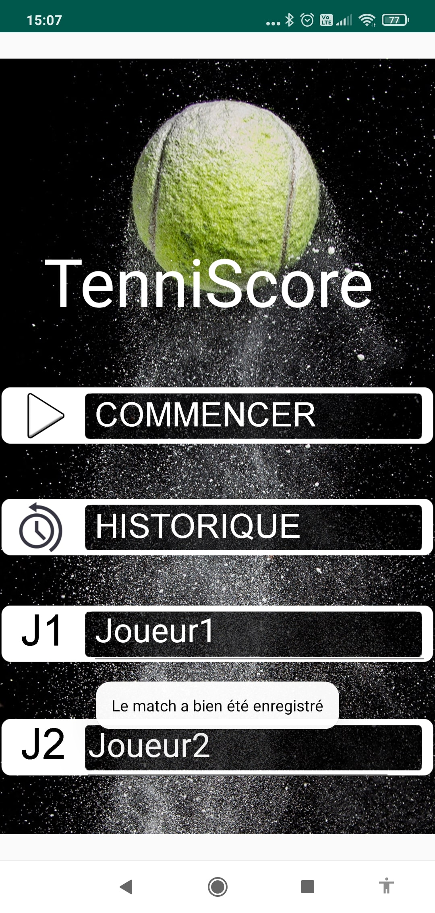
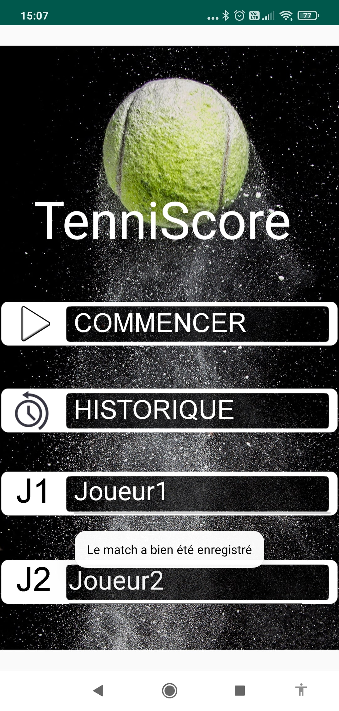

Qui suis-je?
Antoine, 22 ans, je suis actuellement étudiant en BTS SIO au lycée Bonaparte à Toulon. Passionné par la programmation, j'aime apprendre et transmettre le savoir que j'ai pu acquérir. J'aime voyager, découvrir de nouvelles cultures, j'ambitionne de faire une partie de ma carrière à l'étranger. Sportif, je pratique le tennis depuis mon plus jeune âge. Admis dans la formation d'ingénieur informatique et multimédia du Conservatoire National des Arts et Métiers, je suis à la recherche d'une alternance dans le développement informatique.
Parcours scolaire
2013
Baccalauréat général série Economique et Sociale - Lycée du Coudon (La Garde)
2016
Licence de mathématiques - Université de Toulon (L1x2 - réorientation en cours de L2)
2019
BTS Services Informatiques aux Organisations option Solutions Logicielles et Applications Métiers - Lycée Bonaparte (Toulon)
2021
Ingénieur informatique et multimédia en alternance - Conservatoire National des Arts et Métiers (Toulon)
2024
Expériences professionnelles
Stages
Développeur Web | Cofline | Janvier - Février 2021
Stage de 7 semaines
Missions :
- Création d'un package Composer avec Laravel
- Création d'un système de visioconférence via navigateur en P2P avec WebRTC
- Refonte d'une application Web en Laravel
Développeur Web | Cabinet Tatoueix | Mai - Juin 2020
Stage de 6 semaines
Mission :
- Création d’un système d’authentification à multiples facteurs avec Laravel
Job étudiant
Hôte de caisse | Intermarché La Garde | Depuis avril 2017
Centres d'intérêt
Le tennis
Le tennis est une passion transmise par mes parents. J'ai participé à de nombreuses compétitions lors de mon adolescence. Aujourd'hui, je suis classé 15/5.
Les voyages
Le voyage a toujours fait partie de ma vie. J'ai eu la chance de beaucoup partir en vacances avec ma famille dans les quatre coins de la France et du monde. J'adore découvrir de nouvelles cultures. J'ai la volonté de passer une partie de ma carrière à l'étranger afin de lier ma soif de découverte du monde avec mon activité professionnelle.
Parlement Hongrois - Budapest - Février 2020
Les jeux vidéo
Je suis passionné par les jeux vidéo et l'e-sport. Les jeux vidéo m'ont accompagné pendant la majeure partie de ma vie. Aujourd'hui, je joue principalement à Counter Strike.
Compétences
WEB
HTML
CSS

JavaScript

PHP

Laravel

Symfony
Logiciel

C#
Mobile

Java
Base de données
SQL

Oracle
MySQL
MariaDB

SQLite
Gestion de projet

GIT
GitHub

Kanban
TDD

UML
Langues

Anglais (TOEIC : 900/990)
Projets

GSB
Situation : Projet réalisé en PPE de deuxième année
Objectif : Réalisation d'une application WEB et d'une application mobile. Permettant de saisir et d’enregistrer tous les frais engagés par les visiteurs médicaux. Ainsi que un Service Windows permettant d'automatiser les remboursements tous les mois.
Technologies utilisées :
- HTML/CSS/JS, PHP et Ajax pour l'application WEB
- Java pour l'application mobile
- C# pour le service windows
- MariaDB pour le SGBD

TenniScore
Situation : Projet réalisé en PPE de première année
Objectif : TenniScore est une application mobile ayant pour but de faciliter la gestion d'un tableau des scores d'un match de tennis. Elle permet également de garder un historique de ses rencontres.
Technologies utilisées :
- Java
- SQLite

Maison des Ligues
Situation : Projet réalisé en PPE de deuxième année
Objectif : Réalisation d'une application WEB permettant à l'utilisateur de s'inscrire pour un évènement.
Technologies utilisées :
- HTML/CSS/JS
- Symfony 4
- MariaDB
GSB
×


TenniScore
×


 


Veille
J'effectue une veille technologique de manière régulière. Ma veille est accès majoritairement vers : le développement Web.
Pour réaliser ma veille j'utilise principalement ces outils :
- YouTube
- Sites spécialisés
- Documentation
- Newsletters
Les technologies du Web
Je m'interesse aux nouveautés du monde du Web. Afin de me renseigner, je suis plusieurs chaînes YouTube tels que :
- Dev Theory, leur slogan : "Devenir et rester un bon développeur JavaScript"
- Grafikart
De plus, j'effectue une veille plus poussée sur Laravel.
Laravel est un framework web open-source écrit en PHP respectant le principe modèle-vue-contrôleur. Il est le framework back-end le plus "staré" sur GitHub.
Afin de me maintenir à jour sur cette technologie, je suis des chaînes YouTube tels que :
- Laravel Daily
- Nord Coders
Ou encore sur des sites tels que :
- laravel.sillo.org
- laravel-news.com
Autres
Pour ce qui est des autres domaines du développement, je suis également des chaînes Youtube tels que :
- Underscore_ : "Le talk-show des passionnés de l'IT"
- Defend Inelligence : chaîne d'un spécialiste de l'IA
- Les Frères Codeurs : développement informatique généraliste, avec une touche d'humour
Il y a certaines technos sur lesquels je me suis plus interssées notamment :
Rust
"Un langage permettant à chacun de construire des logiciels fiables et efficaces." Rust est un language bas niveau direct concurrent du C. Présent dans le navigateur Mozilla Firefox ou encore sur le logiciel Discord. Il est également le language le plus aprécié. Il a été élu le language le plus aimé par ses développeurs les cinq dernières années sur le sondage annuel de Stack Overflow.
React native
React Native est un framework d'applications mobiles open source créé par Facebook. Il est utilisé pour développer des applications mobiles cross-plateform
Je m'interesse également aux cryptomonnaies et la technologie de blockchain notamment :

Ethereum
Ethereum est un protocole d'échanges décentralisés permettant la création par les utilisateurs de contrats intelligents. La blockchain Ethereum a été développé à l'aide de son propre language : Solidity